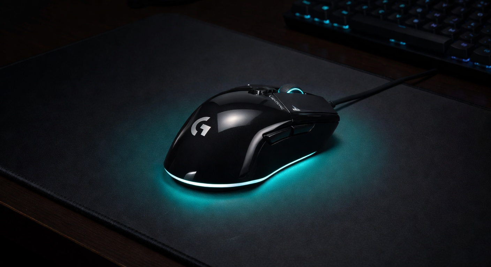

Best Gaming Mouse 2026: Top 5 Picks at Every Price Point
Updated August 2026. The flagship mouse race moved: the old G305 is no longer the wireless value pick, the Aerox 3 honeycomb era is over for this list, and the Razer Viper V3 Pro is the competitive default we would actually send a friend. Picks below come from manufacturer specs, independent reviews, and public pro-share — not a CosmicGamesHub lab. Whether you spend $29 or $159, here is what we would buy right now.
| Pick | Mouse | Price | Weight | Best For |
|---|---|---|---|---|
| 💰 Budget | Logitech G203 | ~$29 | 85g | Casual / first gaming mouse |
| ⭐ Mid-Range | Razer DeathAdder V3 | ~$69 | 59g | Competitive FPS / ergo shape |
| 📡 Wireless Value | Logitech G305 X Superlight | ~$80 | 59g | Budget Superlight wireless |
| 🎯 Competitive | Razer Viper V3 Pro | ~$119 | 54g | Pro ambidextrous FPS |
| 👑 Proven Flagship | Logitech G Pro X Superlight 2 | ~$114–$159 | 60g | CS2 default / HERO 2 |
Jump to a Section
1. Best Budget Gaming Mouse (~$25–$35)

The Logitech G203 is proof that you don't need to spend much for a capable gaming mouse. It houses the same reliable 8000 DPI sensor found in mice costing twice as much. At 85g it's light, the cable is flexible enough to not feel restrictive, and the 6-button layout covers everything most gamers need. The best $30 you can spend on a gaming peripheral.
Pros
- Exceptional sensor for $29
- Lightweight at 85g
- 6-button layout with side buttons
- G HUB software (optional)
Cons
- Right-handed only shape
- Wired only at this price
- Clicks feel slightly shallow
2. Best Mid-Range Gaming Mouse (~$60–$70)

The DeathAdder V3 is Razer's lightweight evolution of their legendary shape. At 59g it's genuinely ultralight without the honey-comb shell compromise. The Focus Pro 30K optical sensor is class-leading at any price. Razer's optical switches click with a satisfying precision and have a rated 90-million-click lifespan. If you play claw or palm grip on PC, this is the best wired mouse money can buy.
Pros
- 59g is genuinely light
- Best sensor in class (30K optical)
- Optical switches = no debounce lag
- Ergonomic shape fits many grip styles
Cons
- Right-handed only
- Wired (wireless version costs more)
- Razer Synapse software is clunky
3. Best Wireless Value Gaming Mouse (~$80)

The original G305 sat at ~99g with a AA cell for eight years. The G305 X Superlight, announced June 2026, keeps the egg shape and drops it to about 59g with a rechargeable battery, HERO 44K sensor, tri-mode LIGHTSPEED / Bluetooth / USB-C, and ~130 hours at 1 kHz. Optional 8 kHz needs Logitech's separate PRO receiver. Independent reviews call it a worthy follow-up, not a Superlight 2 killer — the skates and value-vs-Lamzu conversation are real. If you wanted the G305 but lighter, this is the 2026 buy. Approximate street price ~$80.
Pros
- Same beloved egg shape, 40% lighter
- HERO 44K is a real sensor jump from 12K
- USB-C recharge + 130-hour claim
- Repair-friendly exposed screws
Cons
- 8 kHz dongle sold separately
- Reviews flag mediocre stock skates
- Original G305 was cheaper on sale
4. Best Competitive FPS Mouse (~$120)

This is the mouse we should have been leading with last spring. Public August 2026 pro-share still has the Viper V3 Pro as Fortnite's most-used mouse and a top-two VALORANT mouse even after the Viper V4 Pro launched. 54g solid shell, Focus Pro 35K, optical Gen-3 clicks, true 8000Hz. Street prices have dropped under MSRP (~$100–$130). The V4 Pro is lighter (49g) and newer; buy V4 if you want the current ceiling, buy V3 Pro if you want the proven shape at a better price. Read our Viper V3 Pro review.
Pros
- Most-used Fortnite mouse as of Aug 2026
- 54g without honeycomb holes
- Optical clicks, onboard memory, 8K
- Often cheaper than Superlight 2 now
Cons
- Pure ambi is worse for some palm grips
- 8K eats battery (~17 hours claimed)
- V4 Pro exists if you want 49g / 50K
5. Best Premium Wireless Gaming Mouse ($150+)

Superlight 2 is no longer the only flagship — it is still the CS2 default. August 2026 ProSettings CS2 tracking has Superlight 2 first, SUPERSTRIKE third, Viper V3 Pro still in the top five. 60g solid shell, HERO 2, LIGHTFORCE hybrids, POWERPLAY-ready. Street price often lands near $114. Skip it for the DEX if you want the ergo hump; skip it for SUPERSTRIKE if you want analog HITS clicks (~$180). We would still buy this one for most Logitech-shaped hands.
Pros
- Used by actual professional players
- Best sensor accuracy available
- 60g without honeycomb compromise
- 70-hour LIGHTSPEED battery
Cons
- $159 is a premium ask
- Right-handed shape only
- No RGB (intentional design)
- No side button customization
Quick Comparison: Best Gaming Mice 2026
| Mouse | Price | Weight | Connection | Sensor DPI | Best For | Buy |
|---|---|---|---|---|---|---|
| Logitech G203 LIGHTSYNC | ~$29 | 85g | Wired | 8,000 | Budget Entry | Amazon → |
| Razer DeathAdder V3 | ~$69 | 59g | Wired | 30,000 | Best Wired | Amazon → |
| Logitech G305 X SUPERLIGHT | ~$80 | 59g | LIGHTSPEED + BT | 44,000 | Best Wireless Value | Amazon → |
| Razer Viper V3 Pro | ~$119 | 54g | HyperSpeed 8K | 35,000 | Competitive FPS | Amazon → |
| Logitech G Pro X Superlight 2 | ~$114–$159 | 60g | LIGHTSPEED 8K | 32,000 | CS2 Default | Amazon → |
Gaming Mouse Buying Guide: What Really Matters
Sensor Accuracy
The sensor is the heart of a gaming mouse. Modern optical sensors from Logitech (HERO), Razer (Focus Pro), and SteelSeries (TrueMove) are all excellent — any difference is negligible for 99% of players. Laser sensors are generally avoided for gaming due to inconsistency on cloth pads. Don't pay attention to maximum DPI claims alone; linearity and consistency matter more.
Weight: How Light Is Too Light?
Lighter mice (under 70g) are generally preferred for flicking and high-sensitivity play in FPS games. Heavier mice (90g+) feel more controlled for low-sensitivity precise aiming styles. Most players in the 70–90g range are well served. Below 60g starts to feel insubstantial for some players — personal preference matters here.
Wired vs Wireless for Gaming
Logitech's LIGHTSPEED and Razer's HyperSpeed wireless technologies achieve 1ms polling rates — effectively removing any competitive disadvantage vs wired. Unless you're spending under $50, wireless is worth considering for the cable-drag-free experience. Budget wireless can still have latency issues, so stick to reputable brands at higher price points.
Grip Style and Shape
Palm grip: you rest your whole hand on the mouse — requires a larger, full-coverage shape (DeathAdder V3, Superlight 2). Claw grip: fingers arched, palm only partially on mouse — medium-sized ambidextrous or right-handed mice work best. Fingertip: only fingertips contact the mouse — very small, lightweight mice preferred. Know your grip before buying.
CPI / DPI: What You Actually Need
Most competitive FPS players use 400–800 DPI with high in-game sensitivity. MMO and casual players often prefer 1600–3200 DPI. Any mouse above 4000 DPI with a reliable sensor is more than enough for any play style — the "32,000 DPI" spec is largely marketing.
More Gaming Gear Guides
- Gaming Mouse Buying Guide — DPI, Polling Rate, Sensors Explained →
- Best Gaming Headsets 2026 →
- Best Budget Gaming Chairs (Under $200) →
- FPS Calculator — See What Your Rig Can Handle →
- Gaming Mouse Shape Guide — Ergonomic vs Ambidextrous →